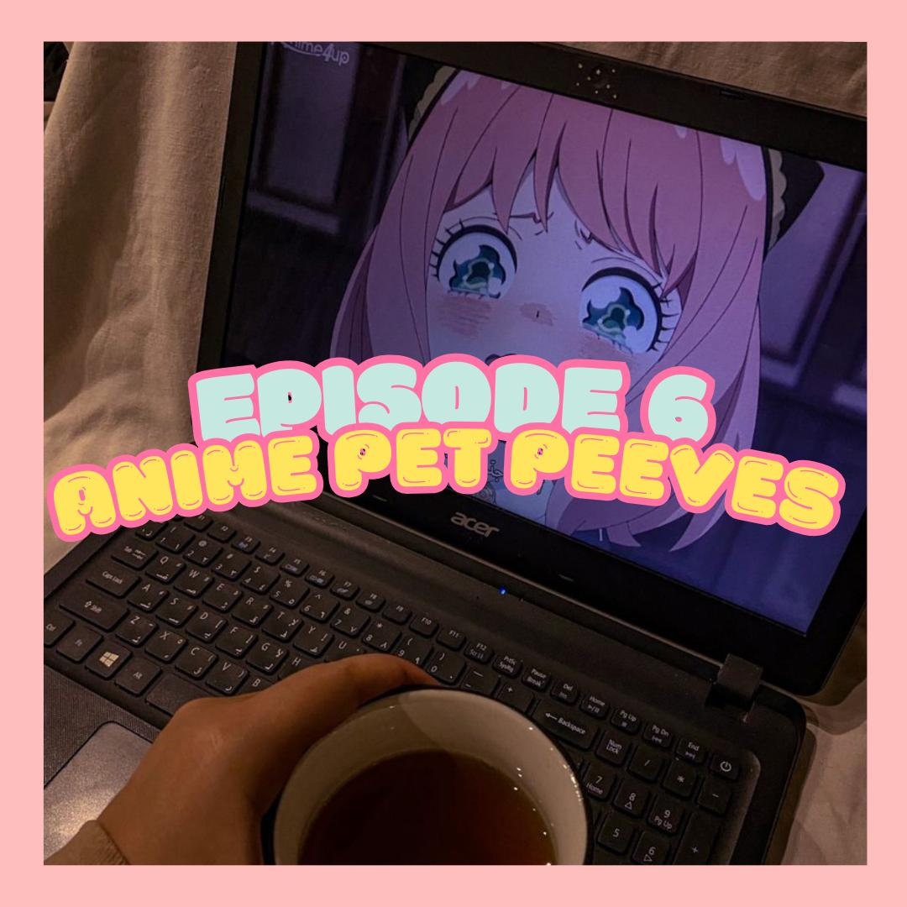

Episode 6: Anime Pet Peeves
"Anime fans won't like this!"
In this episode, we dive into our biggest anime pet peeves! From overused tropes to cringe-worthy character designs. Whether you're a seasoned otaku or a casual fan, join the conversation and laugh along. Get ready for some heated debates and relatable rants—because even the biggest anime fans have their limits!